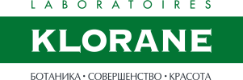

<!DOCTYPE html>
<html>
<head>
  <meta charset="utf-8">
  <link rel="stylesheet" href="css/fonts.css">
  <link rel="stylesheet" href="css/animate.min.css">
  <link rel="stylesheet" href="css/style.css">
  <script src="js/wow.min.js"></script>
  <script>new WOW().init();</script>
</head>
<body>

<div class="container">
  <div id="wrapper">
    <div id="content" class="clearfix">
      <div class="main">

        <div class="lesson -one clearfix" id="one">

          <div class="slider-control js-first-control"></div>

           <div class="left">
             <h1 class="main-title">Уроки ботаники<br/>для ваших волос</h1>

            <div class="image-slider wow fadeInDown" data-wow-delay="0.5s">
              <ul class="image-list">
                <li class="image-item -one"></li>
                <li class="image-item -two"></li>
              </ul>
            </div>

           </div>

          <div class="right">
            <div class="main-intro-text wow fadeInDown" data-wow-delay="0.5s">
              Межсезонье — сложное время. Лето позади, до Нового года далеко, солнца катастрофически не хватает, а вслед за листопадом наступает куда менее живописный период выпадения волос. Кажется, выручить в такой ситуации может лишь поездка в теплые края. Woman.ru решил отправиться в Южную Америку, где собирают ингредиенты для серии KLORANE с хинином и витаминами группы B. Уроки, которые мы извлекли из этой экспедиции, — в нашем обзоре.
            </div>
            <div class="line"></div>
            <div class="text-slider wow fadeInRight" data-wow-delay="0.5s">
                <div class="text-item wow fadeInRight" style="display: block;">
                  <h3 class="lesson-title -dark"><span>Урок 1.</span> Что такое хинин?</h3>
                  <div class="lesson-content">
                    Хинин — это экстракт, полученный из коры южноамериканского хинного дерева. Название растения происходит от древнеперуанского quina-quina. Значение этих слов история не сохранила. Но судя по тому, что удвоение корня является в Перу знаком особого уважения, похоже, что целебные свойства дерева были известны еще много сотен лет назад. У хины есть и еще одно название — цинхона. Это название Карл Линней дал дереву в честь супруги вице-короля Испании Анны Цинхоны. Согласно легенде, во время пребывания в заморских владениях она была излечена от малярии служанкой из племени инков и привезла замечательное лекарство на родину.
                  </div>
                </div>
                <div class="text-item wow fadeInLeft">
                  <div class="beauty-content">Самый ценный на сегодня вид цинхоны — Cinchona pubescens Valh., кора которой отличается особенно высоким содержанием хинина. Именно его используют для экстракции хинина ведущие производители противомалярийных лекарств. И именно она вошла в состав средств KLORANE для ослабленных и выпадающих волос.
                </div>
                </div>

            </div>
          </div>

        </div>

         <div class="extra-info -first">
            <div class="content wow fadeInDown" data-wow-delay="0.5s">В XXI веке<br/>ученые совершили<br/>прорыв в косметологии,<br/>обнаружив, что добавляя хинин к другим<br/>ингредиентам, можно в разы улучшить их<br/>усвоение. Без химических катализаторов.</div>
         </div>

        <div class="lesson -two" id="two">
          <div class="slider-control js-second-control"></div>

          <div class="image-slider wow fadeInUp" data-wow-delay="0.5s">
            <ul class="image-list">
              <li class="image-item -one"></li>
              <li class="image-item -two"></li>
            </ul>
          </div>

          <div class="text-slider wow fadeInUp" data-wow-delay="0.5s">
              <div class="text-item wow fadeInUp clearfix" style="display: block;">
                <div class="lesson-content wow fadeInUp">
                <h3 class="lesson-title -dark"><span>Урок 2.</span><br/>Зачем нужен хинин?</h3>
                  <span>В XIX веке англичане придумали добавлять этот порошок в газировку: колонии Великобритании располагались в тропических странах, где бушевала малярия. А антисептик хинин, в те годы использовавшийся вместо антибиотиков, позволял английским колонистам не разболеться. В начале</span>
                </div>
                <div class="lesson-content wow fadeInDown">
                  волне интереса к психотерапии хинин стал входить в состав седативных сборов — оказалось, что он неплохо успокаивает. А в начале XXI века ученые обнаружили еще одну любопытную вещь: выяснилось, что тот же самый хинин регулирует межклеточный обмен веществ в коже. Это стало прорывом в косметологии: получалось, что, соединив экстракт хины с другими активными ингредиентами, можно было в разы улучшить их усвоение. Не прибегая при этом ни к каким химическим компонентам и «катализаторам».
                </div>
              </div>
              <div class="text-item wow fadeInUp">
                <div class="beauty-content wow fadeInDown">
                  Что делать, если, несмотря на правильное питание и прием витаминов, волосы сильно выпадают и выглядят тусклыми и ослабленными? Вполне возможно, полезные вещества до них попросту не доходят. Если волосяная луковица ослаблена, снижается и ее способность «высасывать» полезные вещества из кожи. При этом проблема
                </div>
                <div class="beauty-content wow fadeInUp">
                  уходит, стоит только укрепить волосяной фолликул. Именно на это сделали ставку создатели новой серии для волос с хинином лаборатории KLORANE. Экстракт хины воздействует на волосяной фолликул, повышая его жизнеспособность, активизируя рост и улучшая усвоение витаминов группы B. В результате волосы выглядят гладкими и яркими, как после биологического окрашивания.
              </div>
              </div>
          </div>

        </div>

        <div class="lesson -three" id="three">
          <div class="slider-control js-third-control"></div>

          <div class="image-slider wow fadeInUp" data-wow-delay="0.5s">
            <div>
            <ul class="image-list">
              <li class="image-item -one"></li>
              <li class="image-item -two"></li>
            </ul>
            </div>
          </div>

          <div class="text-slider fadeInLeft" data-wow-delay="0.5s">

              <div class="text-item wow fadeInLeft" style="display: block;">
                <div class="lesson-content">
                  <div id="shape"></div>
                  <h3 class="lesson-title -light">Урок 3.<br/>Почему осенью<br/>выпадают волосы? </h3>
                  <span>Чтобы определить причину выпадения волос, проведите простую самодиагностику. Попытайтесь определить, как именно они выпадают. Если по всей окружности головы, а не локально, то, скорее всего, вы имеете дело с диффузным выпадением. Причинами его может быть любой стресс: высокий подъем температуры, прием антибиотиков, чрезмерные психические или физические нагрузки, роды и период лактации у женщин. Резкая смена погоды, холод, ветер и сокращение светового дня тоже относятся к таким стрессовым факторам. Пугаться осеннего «волосопада» не стоит: пройдет несколько недель, и организм сам адаптируется к новым температурным режимам. Но если вы дорожите каждым волоском на своей голове, неприятной акклиматизации можно избежать.</span>
                </div>
              </div>
              <div class="text-item wow fadeInRight">
                <div class="beauty-content">
                  <div id="shape"></div>
                  Если волосы выпадают, помогут «коктейли» с высоким содержанием витаминов группы B, PP и кофеина. Доставить эти полезные вещества можно с помощью масок, шампуней и бальзамов. Главное, правильно подготовить кожу: распарить, сделать массаж, пилинг. Или использовать средства с хинином, которые ускоряют обмен веществ в коже головы безо всякого механического вмешательства. Так, укрепляющий концентрат KLORANE с хинином нужно просто нанести на чистую вымытую кожу головы массажными движениями и оставить до полного впитывания средства. Эффект будет заметен уже через пару недель, а оптимальный видимый результат — после 12-недельного курса.
              </div>
              </div>

          </div>

          <div id="product-img"></div>

        </div>

        <div class="extra-info -second">
          <div class="content wow fadeInDown" data-wow-delay="0.5s">
            Витамины группы B не случайно называют витаминами красоты. От витамина B12 зависит состояние волосяных луковиц. Укрепляющим действием обладает и витамин B8 — именно при недостатке этих двух витаминов волосы начинают выпадать.
          </div>
        </div>

        <div class="lesson -four" id="four">
          <div class="slider-control js-fourth-control"></div>

          <div class="image-slider wow fadeInUp" data-wow-delay="0.5s">
            <ul class="image-list">
              <li class="image-item -one">
                <div class="text-slider wow fadeInDown" data-wow-delay="0.5s">
                    <div class="text-item wow fadeInDown" style="display: block;">
                      <h3 class="lesson-title -light">Урок 4.<br/>Почему витамины<br/>группы B так важны<br/>для наших волос?</h3>
                      <div class="lesson-content wow fadeInDown">
                        <span>И не только для волос. Состояние кожи и ногтей тоже зависит от них — не случайно эту группу называют витаминами красоты. В6 (пиридоксин) предотвращает сухость кожи и предупреждает появление перхоти. От витамина B12 зависит состояние волосяных луковиц. Укрепляющим действием обладает и витамин B8 — именно при недостатке этих двух витаминов волосы начинают выпадать.</span>
                      </div>
                    </div>
                </div>
              <li class="image-item -two">
                <div class="text-slider">
                    <div class="text-item wow fadeInUp">
                      <div class="beauty-content wow fadeInUp">
                        Дополните свой рацион витаминами красоты натурального происхождения. Витамин B12 в большом количестве содержится в печени, B6 — в рыбе, сое и орехах. B8 — в бобовых культурах. И не забывайте о витаминном уходе. Шампунь, кондиционер и укрепляющий концентрат KLORANE содержат все необходимые для волос витамины группы B, а хинин способствует их идеальному усвоению.
                      </div>
                    </div>
                </div>
            </ul>
          </div>
        </div>

        <div class="cosmetics">
          <h2 class="cosmetics-title">бьюти-канцеляри</h2>
          <div class="cosmetics-item -first">
            <div>
              <h4 class="item-title wow fadeInDown" data-wow-delay="0.5s">Шампунь KLORANE<br/>с хинином<br/>и витаминами группы B</h4>
              <div class="item-content wow fadeInDown" data-wow-delay="0.5s">
                <span>Шампунь содержит три главных витамина красоты для волос: B6, B8, B12, а также активный компонент хинин. Работая в команде, они улучшают микроциркуляцию в коже головы, укрепляют волосы и стимулируют луковицы к дальнейшему росту. Шампунь не вызывает раздражения даже после агрессивных дермокосметических программ по восстановлению и уменьшению выпадения волос. При этом, несмотря на растительный состав, отлично очищает. </span>
              </div>
              <a href="#" class="link more">узнать больше</a>
            </div>
          </div>

          <div class="cosmetics-item -second">
            <div>
              <h4 class="item-title wow fadeInDown" data-wow-delay="0.5s">Бальзам-ополаскиватель<br/>KLORANE с хинином и<br/>витаминами группы B</h4>
              <div class="item-content wow fadeInDown" data-wow-delay="0.5s">
                <span>Бальзам дополняет действие шампуня KLORANE с хинином и витаминами группы В. Он помогает ослабленным волосам вновь обрести силу, энергию и сияние. А благодаря активному компоненту с кондиционирующим действием препятствует спутыванию волос. Гипоаллергенен, как и вся продукция KLORANE.</span>
              </div>
              <a href="#" class="link more">узнать больше</a>
            </div>
          </div>

          <div class="cosmetics-item -third">
            <div>
              <h4 class="item-title wow fadeInDown" data-wow-delay="0.5s">Укрепляющий концентрат KLORANE<br/>от выпадения волос с комплексом<br/>хинина и кофеина</h4>
              <div class="item-content wow fadeInDown" data-wow-delay="0.5s">
                <span>Содержащийся в составе средства коктейль из хинина и кофеина укрепляет волосы и стимулирует рост волосяных луковиц. А комплекс витаминов PP и B5 в сочетании с альфа-пиненом защищает локоны от воздействия свободных радикалов и оказывает укрепляющий эффект на структуру кератина. Результат: ваши волосы становятся не только более крепкими, но и более молодыми.</span>
              </div>
              <a href="#" class="link more">узнать больше</a>
            </div>
          </div>

        </div>


      </div>
      <div class="clearfix"></div>
      <div class="footer">
        <div class="social">
          <a href="#" class="link social-icon"></a>
          <a href="#" class="link social-icon"></a>
          <a href="#" class="link social-icon"></a>
          <a href="#" class="link social-icon"></a>
        </div>
        <div class="footer-logo">
          <a href="#" class="link"></a>
        </div>
      </div>

    </div>
  </div>
</div>

<script src="js/jquery-3.1.1.min.js"></script>
<script src="js/shapes-polyfill.js"></script>
<script src="js/main.js"></script>
<!-- <script>
    window.onload = function() {
        window.ShapesPolyfill.run();
    }
</script> -->

</body>
</html>
